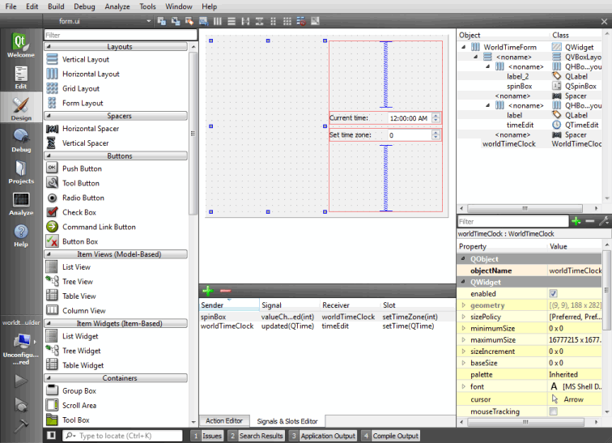

Developing Widget Based Applications
Qt Creator automatically opens all .ui files in the integrated Qt Designer, in Design mode.

For more information about Qt Designer, see the Qt Designer Manual.
Generally, the integrated Qt Designer contains the same functions as the standalone Qt Designer. The following sections describe the differences.
Code Editor Integration
To switch between forms (Design mode) and code (Edit mode), press Shift+F4.
You can use Qt Creator to create stub implementations of slot functions. In the Design mode, right-click a widget to open a context menu, and then select Go to Slot. Select a signal in the list to go to an existing slot function or to create a new slot function.
Managing Image Resources
In standalone Qt Designer, image resources are created using the built-in Resource Editor. In Qt Creator, .ui files are usually part of a project, which may contain several resource files (.qrc). They are created and maintained by using the Qt Creator Resource Editor. The Qt Designer Resource Editor is de-activated and the image resources are displayed in the Qt Designer Resource Browser.
Specifying Settings for Qt Designer
You can drag and drop the views in Qt Designer to new positions on the screen.
To specify settings for Qt Designer:
- Select Tools > Options > Designer.
- Specify settins for generating classes and code in Class Generation.
- Specify embedded device profiles, that determine style, font, and screen resolution, for example, in Embedded Design.
- Specify settings for the grid and previewing forms in Forms.
- Specify an additional folder for saving templates in Template Paths.
To preview the settings, select Tools > Form Editor > Preview, or press Alt+Shift+R.
Previewing Forms Using Device Skins
A device skin is a set of configuration files that describe a mobile device. It includes a border image that surrounds the form and depicts a mobile device with its buttons.
To preview your form using device skins:
- Select Tools > Options > Designer.
- Select the Print/Preview Configuration check box.
- In the Device skin field, select a device skin.
- When the form is open in Design mode, press Alt+Shift+R.
- To end the preview, right-click the skin and select Close in the context menu.
Adding Widgets
You can use Qt APIs to create plugins that extend Qt applications. This enables you to add your own widgets to Qt Designer. For more information, see Adding Qt Designer Plugins.